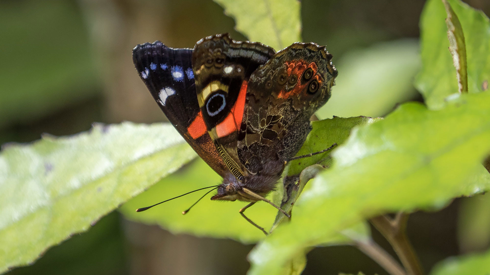
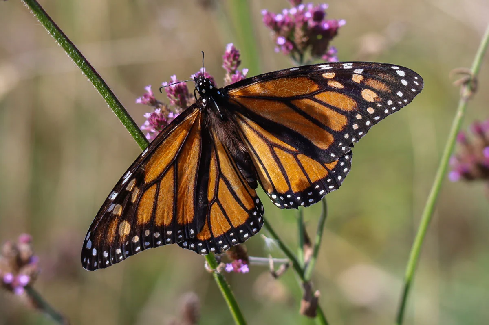
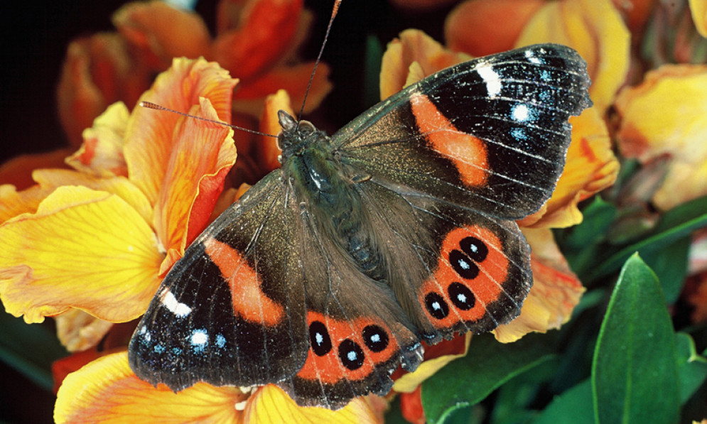

New Zealand Garden Butterfly
Butterflies are delicate, colorful insects commonly seen fluttering through New Zealand gardens. They feed on nectar from flowers and help pollinate plants. Their vibrant wings make them a favorite for gardeners and nature enthusiasts alike.
üåø Habitat: Gardens, parks, and areas with abundant flowering plants.
☀️ Active Time: Daytime; butterflies are diurnal and often seen in sunny conditions.
⚠️ What to Do if Found: Observe gently. Avoid touching; provide native flowers to support their food sources.
Gallery


